接上期：
在上一期中我们谈到，90年代中期以后，随着Windows可视化操作系统的流行，笔记本在保持重量不变的情况下，笔记本屏幕迅速增大，笔记本的长和宽的尺寸也在略微增大。为了保证笔记本有足够舒适的键盘布局，和足够宽大的显示屏幕，早在2000年前后，笔记本的主流尺寸就已经确定在11.5-15.5寸（显示屏对角线）。
但这并不意味着所有的人都接受这种趋势。对于有些人来说，早期笔记本8-10英寸的屏幕就已经够用，甚至80年代折叠电脑那种6寸的屏幕。而随着技术的进步，完全可以在屏幕尺寸不变的同时，将笔记本做的更轻小，可以直接塞到女式手包里，甚至是裤子或上衣口袋里。
这条路线，在英文中被称为Subnotebook，即更小的笔记本之意。
当然，在Windows还没有普及的时代，其实有些笔记本已经做的非常小，可以称得上是Subnotebook。
比如1992年推出的Gateway HandBook，三围只有250 x 150 x 41mm，1.4千克的重量在今天并不算稀奇，但在当年可谓是非常小了。
同年推出的Olivetti Quaderno(PT-XT-20)，尺寸为210 x 148 x 32 mm，重1.05千克。一年后推出的Quaderno 33可以运行DOS和Windows 3.1
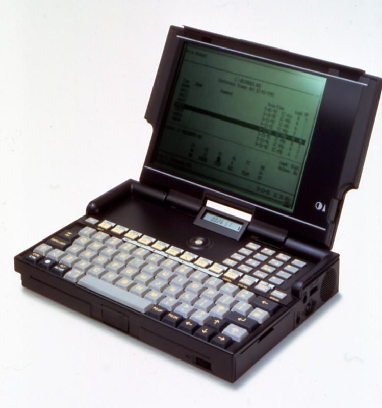
1993年的惠普Omnibook 300，三围也仅是 282 x 163 x 36mm，重量仅有1.3千克。
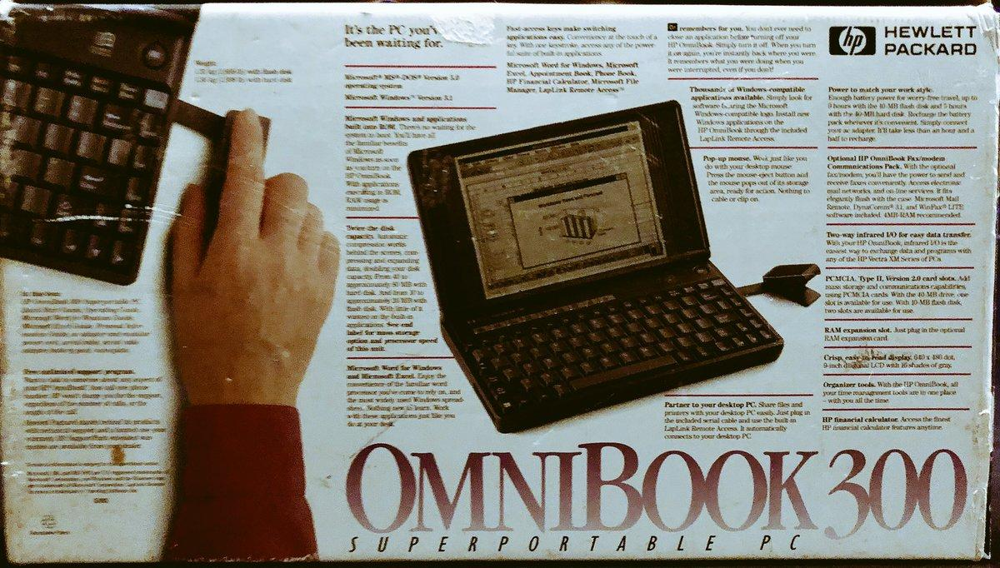
1995年的IBM Palmtop PC。仅重660克，尺寸为158x116x36mm，屏幕为4.7寸。这款产品从尺寸上来说其实算更小的手持电脑的范畴，但它与同时期那些使用Windows CE的Handheld PC不同，是功能完备的PC兼容机。
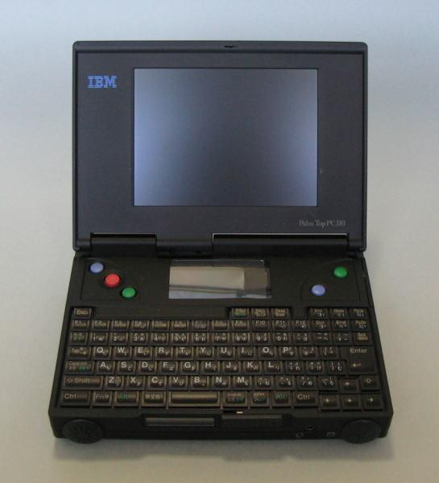
可是随着Windows 3.1和Windows 95的流行，这种小屏笔记本不再受欢迎。上期中我们谈到Omnibook系列不断长大，1994年的Omnibook 600的尺寸实际已经不能算Subnotebook ，而后来甚至更将整个轻薄系列取消。
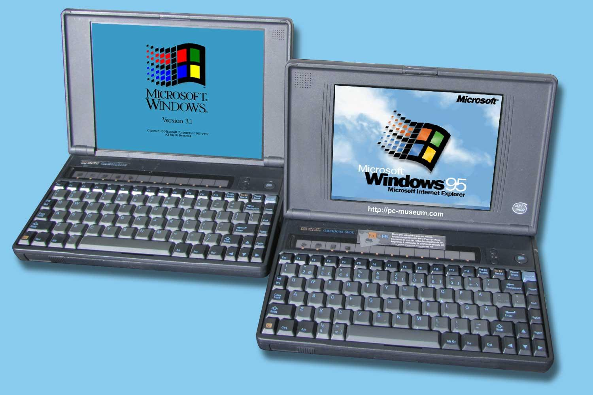
而Gateway的HandBook系列虽然维持了Subnotebook的定位，但也在1995年停产。可以说，Subnotebook这个细分领域在美国还没有成熟就已经死去。
但在大洋彼岸的日本，却是另一番光景。
可能有三个原因造成了日本人仍然对更小的笔记本有需要：
在这种背景下，1996年，东芝Libretto系列发布。Libretto 20的尺寸仅仅只有210x115x34mm，重量只有840g，已经可以手持操作了。这与此前的任何笔记本产品相比，都是无可想象的轻巧。虽然，它的屏幕也只有可怜的6.1英寸，486 DX4的CPU也稍微有点落后。但它却完全支持Windows 95，是实打实的生产力工具。它的价格也不贵，20万日元的售价与当时主流的全尺寸笔记本类似。
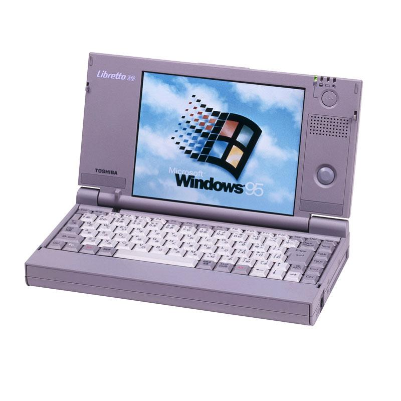
当然，6.1英寸的屏幕再怎么说也还是太小了。1998年，Libretto 100上市，屏幕增大到7.1寸，而重量仍然只有950克，外形尺寸是210×132×35mm，仅仅宽度略微增大。
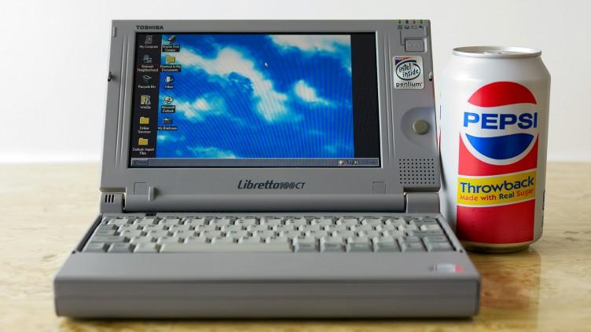
可以看到麻雀虽小，五脏俱全。右侧有红外无线传输和两个PC卡卡槽，后侧有PS/2接口（连接键盘鼠标），9针串口（一般用于连接打印机和调制解调器），15针RGB接口（连接显示器），和25针并行端口（一般用于连接打印机）
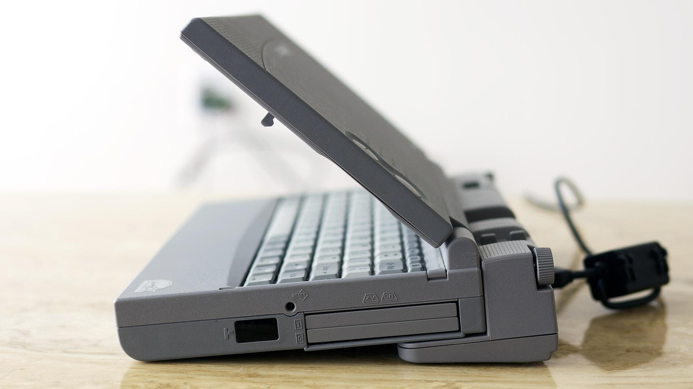
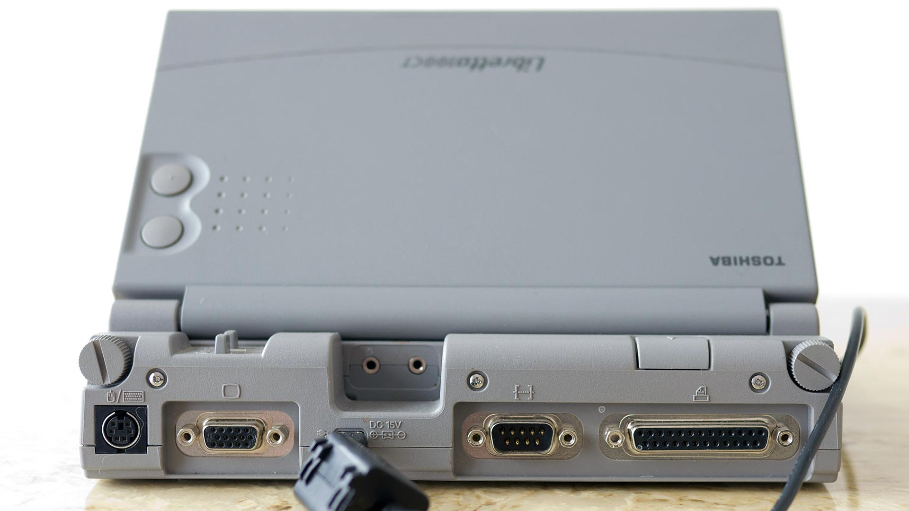
2001年推出Libretto L1，从此开始的L系列换用了10寸显示屏，尺寸有所增大，三围为268×167.2×20.5mm，重1.1千克，但也毋庸置疑是Subnotebook的范畴
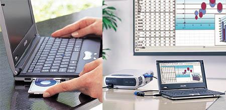
2005年推出的Libretto U100，则又回归了7.2寸屏幕，但重量没有下降。DVD光驱则是通过一个额外的底座实现的。这款产品大概是索尼VAIO U50系列的跟风之作，主打便携多媒体功能。
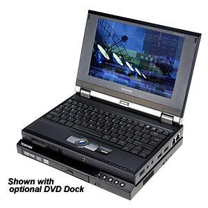
除去东芝Libretto系列以外，索尼也出过几个著名的Subnotebook系列。
1998年，Vaio C1面市。首款产品为VAIO C1 PictureBook，采用8.9寸屏幕，在屏幕比Libretto 100大了很多的前提下，它还更薄，而且配备了前置摄像头，工业设计也更为出彩。
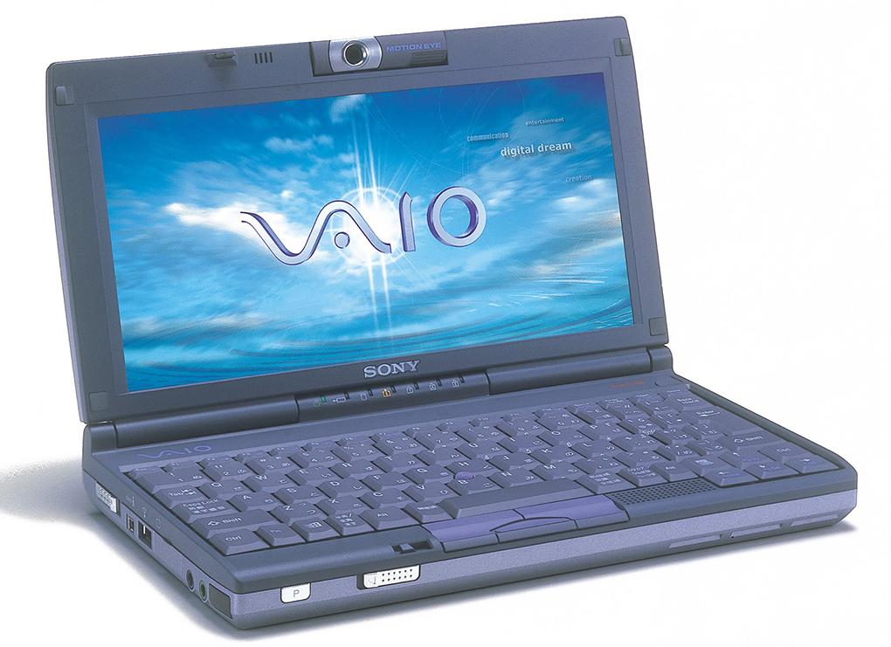
2000年的C1XN是第一款在欧美同步上市的产品，尺寸249x152x28mm，重1千克。采用赛扬处理器。
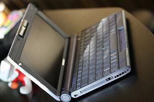
同年，C1VN面市。这之后的C1系列都采用Transmeta Crusoe芯片，是当时兼容x86的CPU中功耗、体积都比较小的一款，相当于今天的Atom。
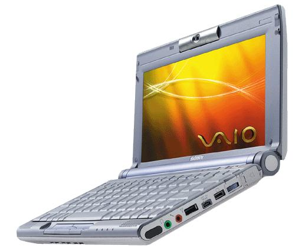
2002年，索尼推出Vaio U1和U3，U系列也成为了索尼新的Subnotebook，但尺寸更小。以U1和U3为例，二者采用6.4寸屏幕，三围是184 mm × 139 mm × 46 mm，重860克。
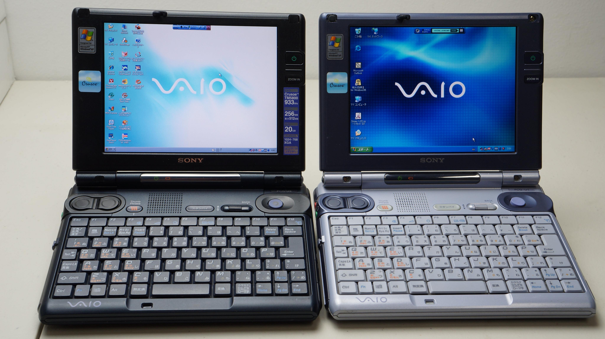
2003年的U101则换成7寸屏，三围却有所减小，为178 mm × 139 mm × 34 mm, 重量也只有880 g
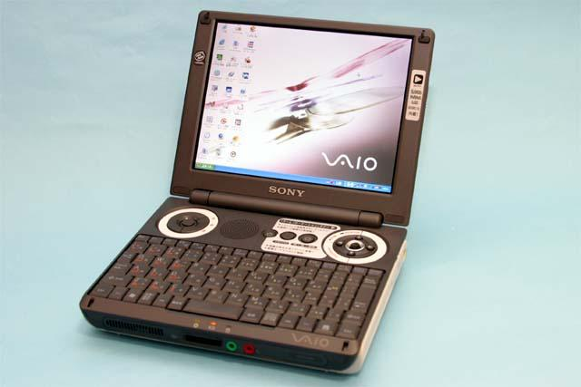
2004年推出仅有5寸屏幕，但体积前所未有得袖珍的U50/U70P，这几款产品的三围只有167 mm x 108 mm x 26.4 mm, 重量仅有550 g。采用奔腾M处理器。
U70P是含有键盘的常规的Subnotebook
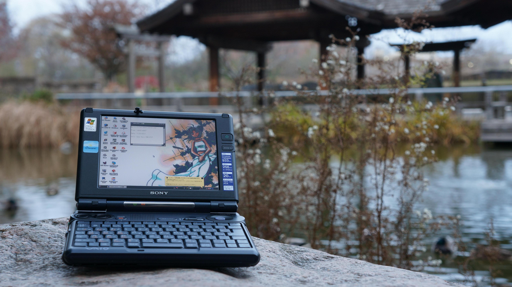
但U50则是外置键盘的，同时还可以加一个电池底座。其实后来Surface的那些概念，都是索尼玩剩下的。
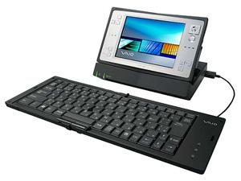
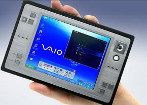
不过呢，索尼当时做这个设计，可以把屏幕做的这么小，主要是让消费者可以把它当MP3/MP4使，这不还配了这么好看的带线控的索尼耳机。不过这个MP4可不便宜，上市售价17.8万日元呢。
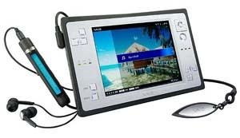
索尼Subnotebook的绝唱，则是2009-2010年的VAIO P系列。在采用8寸显示屏的前提下，它246x120x20mm的尺寸、590g的重量可谓惊为天人。这个系列相信很多读者都已经比较熟悉了，设计在当年很讨很多女生喜欢。但过万的售价和相对孱弱的性能决定了这只能是少数人的玩物。
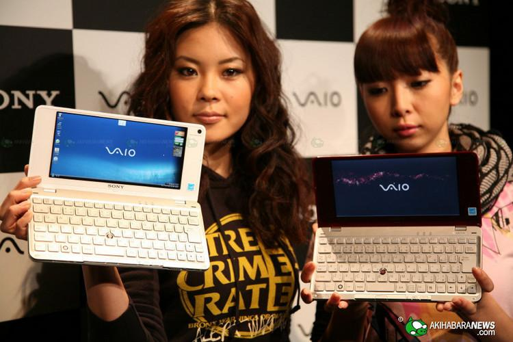
这种小笔电除了服务于移动办公、移动多媒体的需求，也服务于工业界对便携计算的需求。比如日本精工生产的SII WX-1110Z这款小笔电就是牺牲了厚度而优先照顾耐用。值得一提的是，这款笔记本在2002年以后以洋垃圾的形式流入中国，售价非常便宜，只要大几百到上千元。是当时一些喜欢玩数码的学生的第一台笔记本。
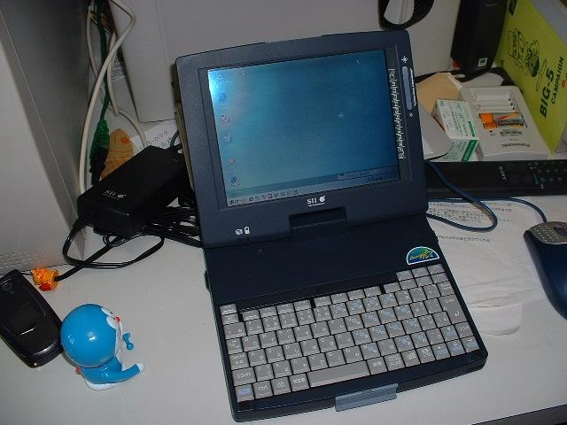
2006年以后，因为越来越多的全尺寸轻薄本都可以做到1千克左右的重量，Subnotebook市场其实就已经式微，索尼和东芝都在之后的两三年内没有再推出过传统意义上的Subnotebook电脑。
Subnotebook电脑朝两个不同的方向演化：一个方向是利用技术的进步，造出更小且同时具有完备功能的UMPC，完全为手持使用设计，不考虑双手下垂式打字的便利性；另一个方向则将Subnotebook造的更廉价，针对儿童市场、教育市场以及仅仅用笔记本上网，不运行大型软件的消费者，即上网本。
不过，就像许多经典的设计总会迎来复兴一样，Subnotebook 的故事并没有随着索尼 VAIO P 的停产而彻底终结。
进入 2010 年代末期，随着英特尔低压处理器能效比的大幅跃升，几家来自中国深圳的创新品牌再次捡起了“超小型笔记本”的接力棒。虽然这些厂商在早期往往将自己的产品归类为追求双手握持的 UMPC，但当它们的屏幕尺寸来到 7 到 8 英寸、且回归了传统的键盘与翻折形态时，它们在实际体验上已经成为了标准 Subnotebook 理念在现代的完美复刻。
主打高端商务体验的壹号本就是这一形态的坚定推行者。
2018 年推出的 One Mix 2S 是壹号本确立江湖地位的关键产品。它的三围是 182 × 110 × 17 mm，采用7英寸屏幕，重量仅 518 g，可以装进女士手包或大衣口袋。这款 7 英寸设备继承了类似联想 Yoga 那样的 360 度翻转设计，可以轻松变成一台支持 2048 级压感手写笔的平板电脑。它采用了主频 1.1-3.4GHz的英特尔 Core m3-8100Y 处理器，搭配 8 GB 内存和 256 GB PCIe 固态硬盘，运行 Windows 10 的同时还集成了指纹解锁，将便携商务做到了极致。
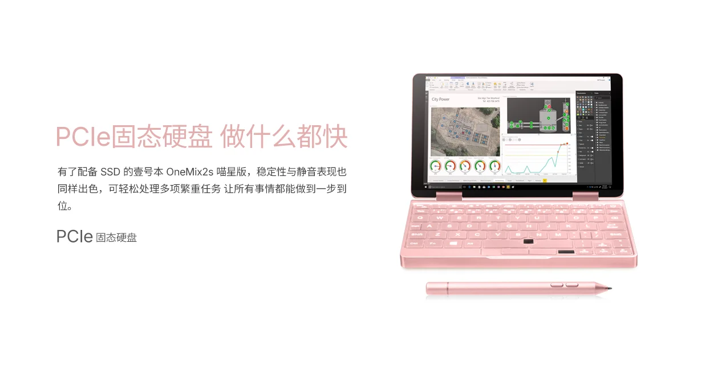
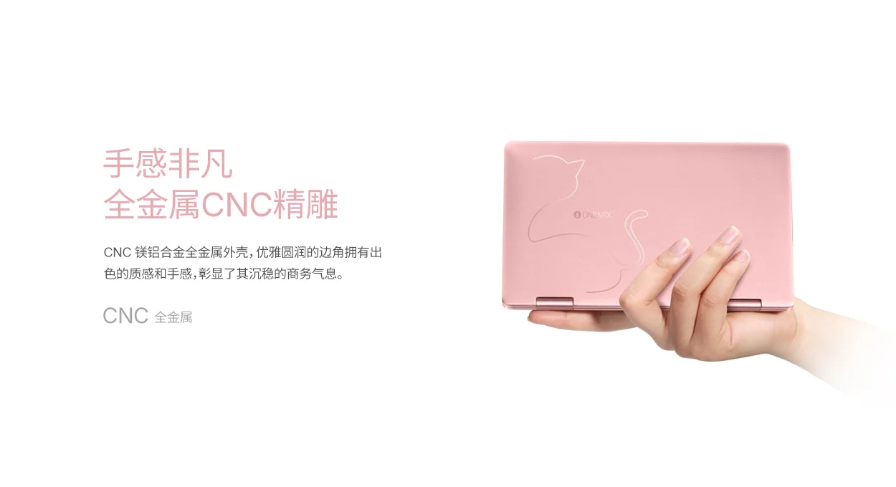
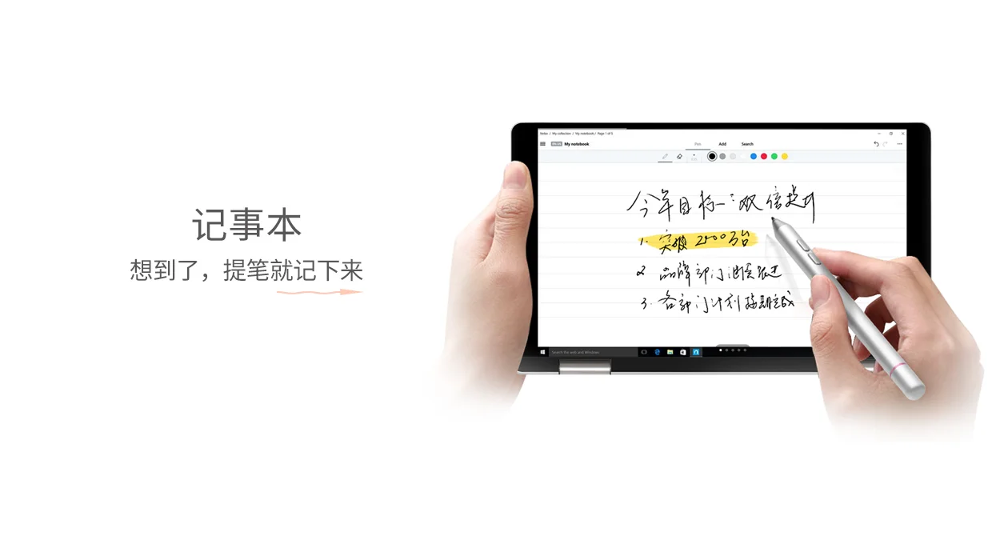
随着用户对屏幕视野和性能要求的不断提高，壹号本在2019年推出了尺寸更大、也更具传统 Subnotebook 味道的高配机型 One Mix 3 Pro。这款机器将屏幕扩大到了 8.4 英寸，三围随之增加到了 204 × 129 × 14.9 mm，重量为 650 g，这与当年东芝 Libretto 系列的尺寸已经非常接近。它使用1.0GHz-4.0GHz的Core i5-10210Y 四核处理器，内存更是高达 16 GB
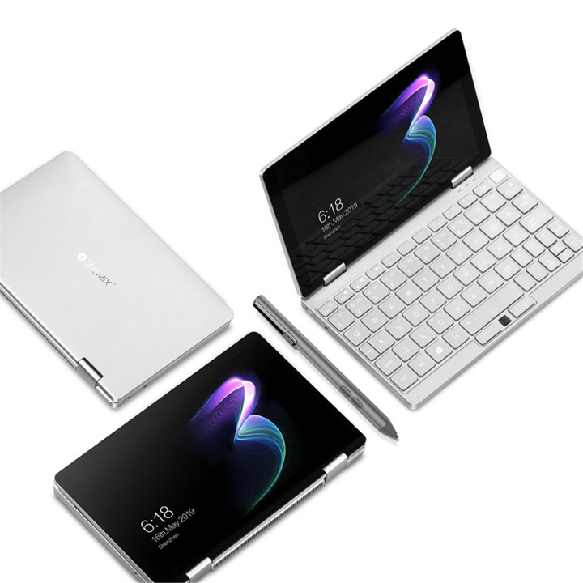
而一直深耕微型电脑领域的 GPD 品牌，也在 2021 年推出了堪称现代 Subnotebook 集大成者的 GPD Pocket 3。这款机器没有采用 360 度后翻设计，而是致敬了当年富士通等日系小本经典的单轴横向翻转变形设计。它配备了一块 8 英寸屏幕，尺寸来到 198 × 137 × 20 mm，重 725 g。在配置上，其顶配版跃升至2.9-5.0GHz的英特尔 Core i7-1195G7 处理器和 16 GB 内存，运行最新的 Windows 11 系统。更绝的是它独创了模块化 I/O 接口，用户可以根据需求随时将侧面接口替换为串口、KVM 模块或额外的 USB 接口。
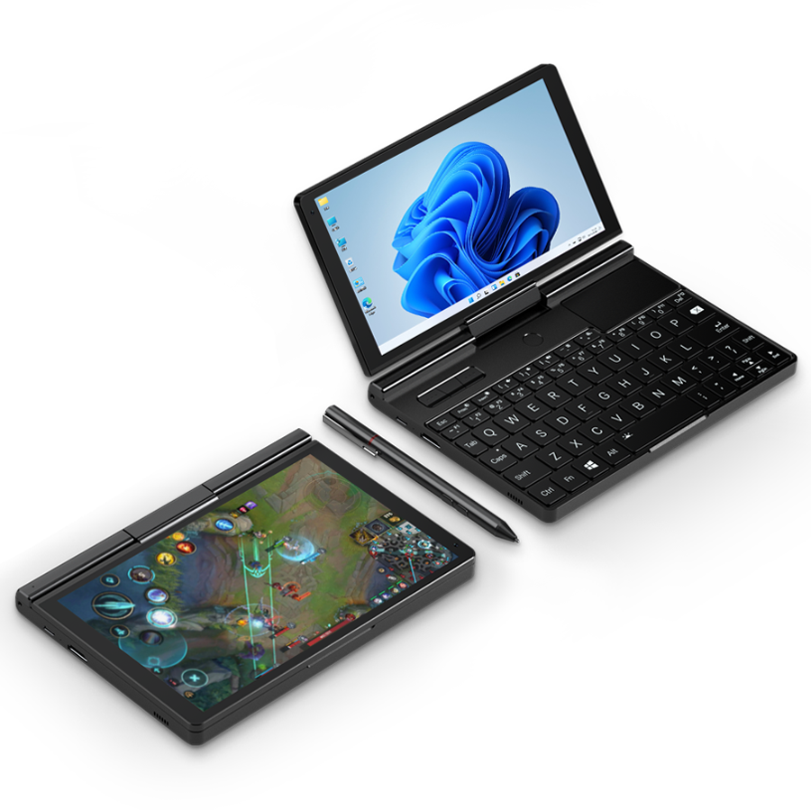
兜兜转转二十几年，从 Gateway HandBook 到东芝 Libretto，再到今天的 One Mix 和 GPD Pocket，尽管智能手机和平板电脑已经无比强大，但 Subnotebook 那种“打开盖子就是一台完整生产力工具、合上盖子就能塞进口袋”的独特魅力，依然在吸引着一代又一代追求极致便携的极客与商务人士。
之后的两期专栏，我们就再继续给大家捋一捋当年由 Subnotebook 演化而来的另外两个分支——UMPC 与上网本的故事。